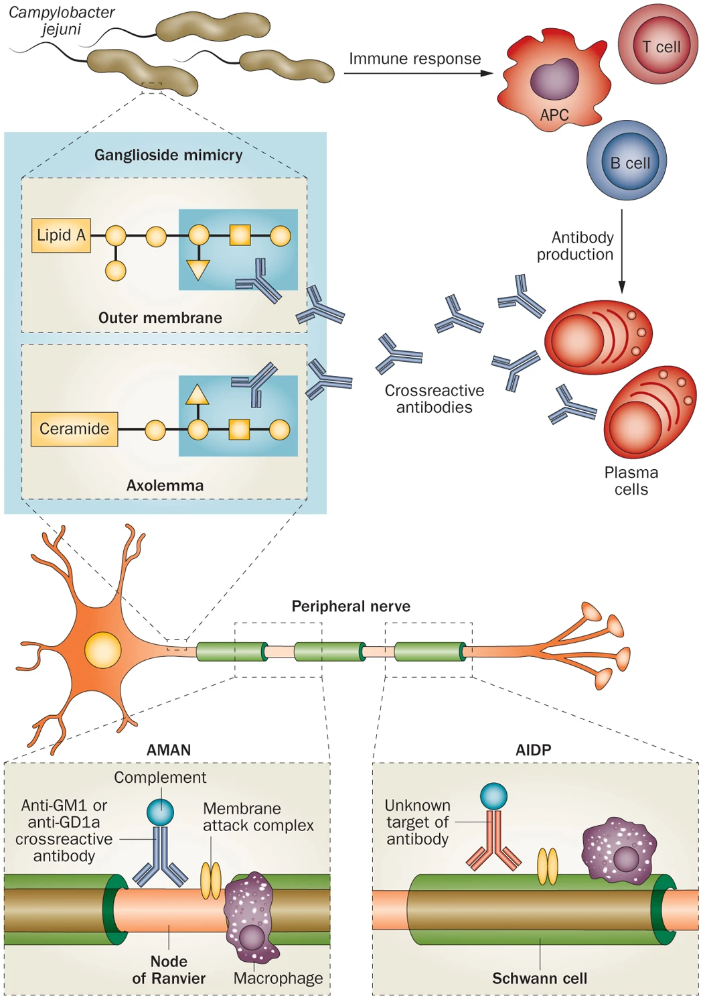
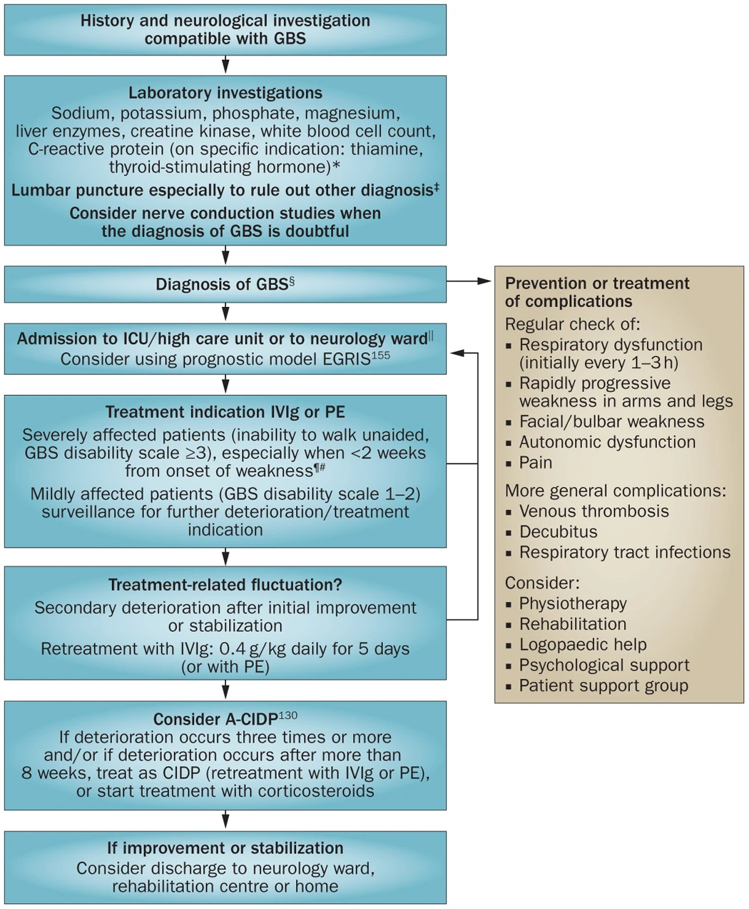

Guillain-Barré Syndrome (GBS)
GBS (i.e. acute inflammatory demyelinating polyradiculoneuropathy or AIDP) is an acute inflammatory polyneuropathy with a reported incidence of 1:100,000 person-years. The risk of GBS increases exponentially with age (+20% per decade of life) and is higher in males than females. GBS is the most common and severe acute paralytic neuropathy. GBS follows a typical clinical pattern, usually preceded by infection or immune trigger. The diagnosis is largely clinical.
Pathogenesis/Immunology
Essentially, this is an autoimmune process leading to acute neuropathy which can be either (1) demyelinating or (2) axonal (motor or sensory) in type. This process is likely antibody-mediated, driven by molecular mimicry between microbial and cellular surface antigens.
The axonal neuropathy subtypes are more associated with anti-GM1 and anti-GD1a IgG autoantibodies.
- 70% of cases are triggered by preceding infections (~3-12 days prior)
- 20-30% of cases are due to Campylobacter jejuni
- Other common inciting pathogens are HHV infection such as EBV or CMV, HIV, hepatitis E, influenza A, arboviruses (Zika virus, Chikungunya), Mycoplasma pneumoniae, Haemophilus influenzae
- less commonly, after some vaccinations (?H1N1, Semple rabies virus)
- less commonly, triggered by immune/neoplastic conditions (lupus, lymphoma)

Clinical Presentation
GBS commonly presents as a rapidly progressing symmetric ascending flaccid paralysis in which leg symptoms are first, with later arm involvement.
- Patients are areflexic due to the demyelinating/axonal processes of the LMN.
- Paraesthesias can be present if the sensory nerves are involved. Generally, cutaneous sensory function is preserved as these are small fibers.
- Autonomic features can be cardiac arrhythmias (bradycardia, orthostasis), sweating abnormalities, urinary retention, gastrointestinal dysfunction, unreactive/dilated pupils
- Lower cranial nerves can be involved with bulbar weakness and secretion difficulties.
- Neuropathic pain is common (neck, back, spine)
| GBS subtypes | Main clinical features | NCS findings | Antibodies* |
|---|---|---|---|
| Acute inflammatory demyelinating polyneuropathy (AIDP) | Sensorimotor GBS, often combined with cranial nerve deficits and frequent autonomic dysfunction | Demyelinating polyneuropathy | Various‡ |
| Acute motor axonal neuropathy (AMAN) | Pure motor GBS; cranial nerves rarely affected | Axonal polyneuropathy, sensory action potential normal | GM1a, GM1b GD1a GalNAc-GD1a |
| Acute motor sensory axonal neuropathy (AMSAN) | Resembles severe AMAN, but sensory fibres are affected, leading to sensory deficits | Axonal polyneuropathy, sensory action potential reduced or absent | GM1, GD1a |
| Pharyngeal–cervical brachial variant | Prominent weakness of oropharyngeal, facial, neck and shoulder muscles | Normal in most patients, sometimes abnormalities in arms, mostly axonal pattern | GT1a>GQ1b>>GD1a |
| Miller Fisher syndrome | Ataxia, ophthalmoplegia, areflexia | Normal in most patients; discrete changes in sensory conduction or H-reflex may be present | GQ1b, GT1a |
Miller-Fischer Syndrome
Miller-Fischer syndrome is comprised of a clinical triad of (1) ataxia (2) areflexia (3) ophthalmoplegia causing diplopia. It is most associated with anti-GQ1b antibodies which is strongly associated with C. jejuni. MFS may be less responsive to immunotherapy than classic GBS. Peripheral muscle strength tends to be preserved unless an overlap syndrome exists (MRC 4-5/5).
Bickerstaff Brainstem Encephalitis
Bickerstaff brainstem encephalitis syndrome (BBE) is also associated with anti-GQ1b antibodies and is characterized by progressive symmetric ophthalmoplegia and ataxia with mental status changes such as coma or stupor; pyramidal signs such as hyperreflexia or pathologic reflexes; or pupillary abnormalities and bulbar palsy. Peripheral muscle strength tends to be preserved in pure BBE.
Clinical Course of GBS
Patients reach their nadir by 4-6 weeks. The progressively worsening phase lasts less than 1 week in half of patients, and less than 2 weeks in 80% of patients. The plateau may last 1 week to several months, and then transitions to the recovery phase of illness.
Patients with acute motor axonal neuropathy (AMAN) can have two patterns of recovery: rapid or prolonged recovery.
20% of GBS patients cannot walk without assistance after 6 months, but almost all patients regain this ability within a few years. Most patients will still have residual pain and fatigue on a chronic basis.
Overall mortality is 3-7% and is generally from ventilatory/pulmonary failure, or autonomic dysfunction leading to arrhythmias.
Diagnostic Testing
Tests to Perform
- FVC
- PVR
- MRI whole spine with gadolinium
- CBC, lytes, urea, Cr, INR/PTT
- LP for ?albuminocytologic dissociation
- EMG/NCS
- Consider anti-GQ1b antibodies
General Investigations
- Nerve conduction studies: slowing of nerve conduction, increased latency , or axonal loss pattern with decreased cMAP.
- CSF testing: elevated protein with lack of increased cells which is known as albuminocytologic dissociation. Mild pleocytosis can be possible (15%) but is typically transient
- Anti-GQ1b IgG can be more sensitive for MFS (positive in 85% of MFS in the first week of disease)
- BBE can show brainstem, thalamic, cerebellar, and cerebral involvement on MRI

Treatment of GBS
Airway Management
Close monitoring is required: telemetry, BP, FVC q4h. Consider elective intubation using the 20-30-40 rule: FVC <20 mL/kg, MIP 0 to -30 cm H2O, or MEP < 40 cm H2O.
Predictors of respiratory failure in GBS (occurs in 30% of patients): Onset to admission <7d, FVC <60% predicted, presence of facial weakness, inability to cough/lift head/lift arms/stand.
Dysautonomia (70%)
Manage and monitor for: paroxysmal hypertension (24%), orthostatic hypotension (19%), sinus tachycardia (25%), bradycardia, AV block, urinary retention, ileus.
Optimal Care
SLP, PT/IOT, DVTp, bowel and bladder care, repositioning.
Disease Modifying Therapy
GBS Treatment
For nonambulatory patients within 4 weeks of symptoms, IVIg 2g/kg over 2-4 days total OR Plasma Exchange. There is likely no routine role for sequential treatments (i.e. PLEX then IVIg)
Plasma exchange (PE) decreases the change of worsening when started if the patient is still ambulatory and decreases the time on MV and time to independent ambulation by 50%. The optimal number or dose is not yet established, but most patients receive 5 exchanges totalling 200-250 mL/kg every other day over 10 days. Albumin is preferred to FFP as a replacement fluid.
IVIg is equally effective as PE. The standard dose is 0.4 g/kg daily for 5 days.
Combination therapy of PE + IVIg is not proven to be better than one alone and multiple trials have showed no improved outcomes with PE --> IVIg compared to IVIg alone. For this reason, IVIG is usually the first line treatment due to safety and ease.
Steroids are not helpful in AIDP, only in CIDP. In AIDP, it may increase the rate of relapse.
References
- Harrison's Principles of Internal Medicine 20E, Chapter 439
- Guillain-Barré syndrome - The Lancet
- Guillain–Barré syndrome: pathogenesis, diagnosis, treatment and prognosis | Nature Reviews Neurology
- Parrillo Critical Care Medicine